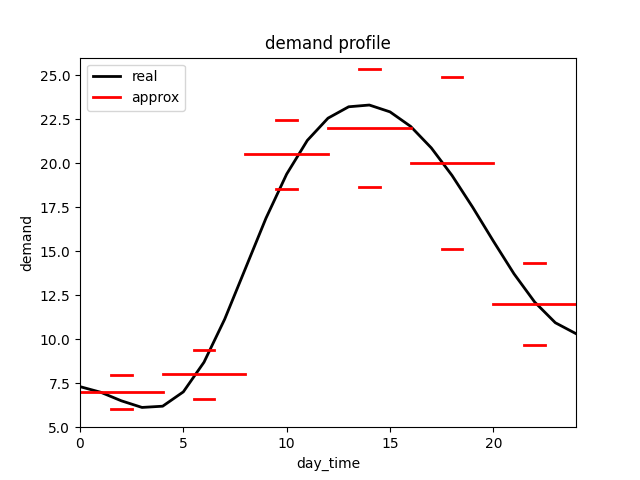

Example 03: Bolt
The purpose of this example is twofold: first, it sets up a pull-controlled material flow in the production system using the interaction between the source and the sink of an order, and second, it shows that global attributes can control the material flow in the production system.
Process description
To understand the interaction of source and sink more easily, a simple process was chosen. A forge station has five forges, each of which produces six bolts per minute. These forges can be independently activated without start-up times. The finished bolt storage can hold up to 5000 bolts.

This process runs 24 hours a day, and demand fluctuates throughout the day at unknown levels. The goal is to activate the machines to ensure that demand can be met and productivity is adjusted to demand.
Source
Since the production process is controlled from the sink, it is necessary to ensure that enough input material is always available. An infinite source achieves this.
def infinite_source(env, factory):
yield 1
An infinite source, where new input material is placed without delay, does not yield a timeout event. To enable a simulation with an infinite source, two conditions must be fulfilled:
The capacity of the buffer storage that is to be filled must be limited; and
The buffer storage capacity must be at least the same as the demand of the process concerning the first process step.
Note
Stores that are filled by an infinite source should not be filled by additional finite sources since the infinite sources dominate them.
Global function
There are three global attributes:
number_bolts: The number of bolts in the final storage
active_machines: The number of currently active machines
max_active_machines: The maximum allowed number of currently active machines
Since the demand (fictitious) is unknown and the production capacity is to be dynamically controlled, the number of bolts in the final storage is used as a control variable.
The idea is that when the demand increases, the number of bolts in the final storage decreases. Thus, the lower the number of bolts, the higher the number of active machines must be, such that the production capacity adjusts itself with a slight time delay to the subsequent demand without having to know the demand. To make this work, the maximum average demand must be smaller than the maximal production capacity of 30 (6 * 5).
control_logic = {1000: 5, 2000: 4, 3000: 3, 4000: 2, 5000: 1}
def global_control(env, factory):
# Set max_active_machines_based on number_bolts
for quantity in control_logic.keys():
if factory.number_bolts < quantity:
factory.max_active_machines = control_logic[quantity]
break
factory.max_active_machines = 0
# Update every time step (minute)
yield env.timeout(1)
Process function: forging
As the focus is on the material flow, no attributes of the bolts are considered in this process function. Before the forging starts, whether the maximum number of active machines has been reached is checked. Since the cycle time is 1 minute, this check is repeated every minute. If this check is passed, then the number of active machines is increased, and the machine is blocked for the forging time. After the forging has finished, the global variable for storage filling is updated, and the number of active machines is updated again.
def forging(env, item, machine, factory):
# Check if production capacity is reached.
while True:
if factory.active_machines < factory.max_active_machines:
break
yield env.timeout(1)
# Update currently active machines
factory.active_machines += 1
# Block forge for forging time
yield env.timeout(1)
# Update store quantity
factory.number_bolts += 6
# Update currently active machines
factory.active_machines -= 1
Sink
It is assumed that the demand follows the given course (black) daily and undergoes certain variations. An approximation is made by six partial intervals, which demonstrate a certain scatter (the 95% interval is indicated).
{kind=link}
In addition, a large demand occurs for approximately 250 bolts approximately every 4 hours, which is also subject to variation. The following function presents the realization of such a source behavior. In addition, the current inventory in the final storage of the bolts is updated.
# Defines the demand distribution over time
time_dict = {1: [0, 4], 2: [4, 8], 3: [8, 12], 4: [12, 16], 5: [16, 20], 6: [20, 24]}
demand_dict = {1: [7, 0.5], 2: [8, 0.7], 3: [20.5, 1], 4: [22, 1.7], 5: [20, 2.5], 6: [12, 1.2]}
def bolt_sink(env, factory):
demand = 0
day_time = env.now % 1440
# Determine the standard demand
for index, time_interval in time_dict.items():
if time_interval[0] < day_time/60 < time_interval[1]:
dis = demand_dict[index]
demand += int(normalvariate(dis[0], dis[1]))
break
# Determining the additional demand
if random() < 0.004:
demand += int(abs(normalvariate(250, 20)))
yield env.timeout(1)
# Update number of bolts
factory.number_bolts -= demand
# Just for output plotting purpose
factory.current_demand = demand
yield demand
Simulation output
The following figure depicts the course of the number of bolts in the final store as well as the demand. The additional demands have been removed from the plot, and a moving average has been used for the demand. Due to oscillation processes at the beginning, the simulated days 2–4 are shown.
The following aspects can be identified:
At midday, the demand is approximately 20, so three to four forges must be active to meet the demand. Therefore, the average inventory at midday is 2000 (see global_control). At night, the demand is approximately eight, so only one to two forges are required.
If there is an additional demand in the steady-state (e.g., at Sim. time = 2400), then the inventory level decreases abruptly. This increases the number of active machines such that the required stock is built up again.

Note
Of course, this mechanism does not represent an efficiency control. The point of this example is rather the use of global quantities to limit machine activity. For example, the currently available electricity can also serve as a limit for the machines.